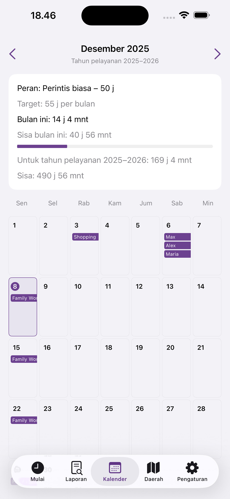
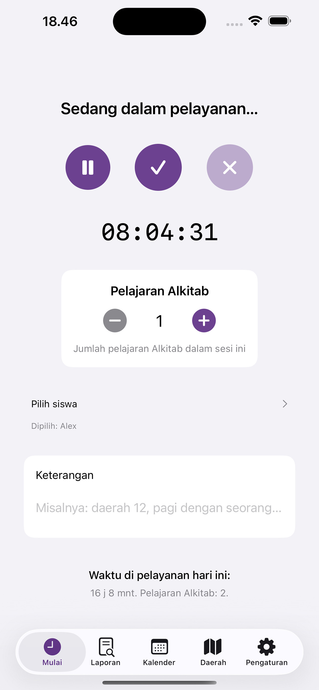
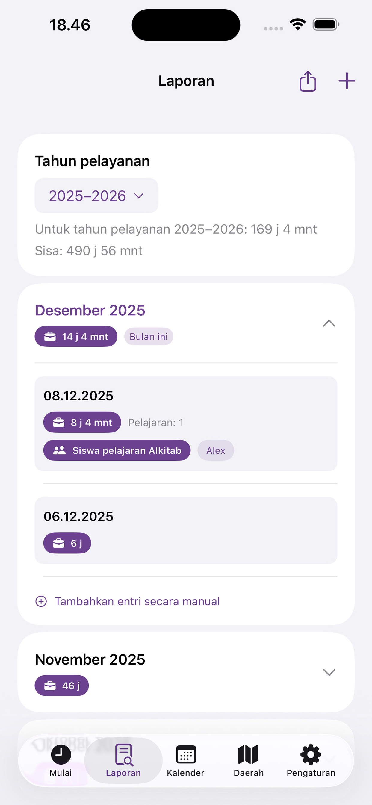
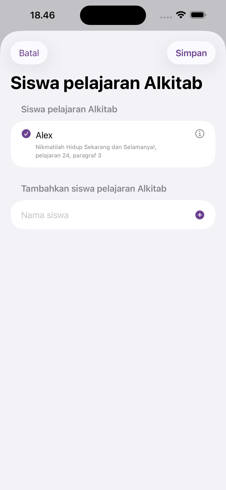
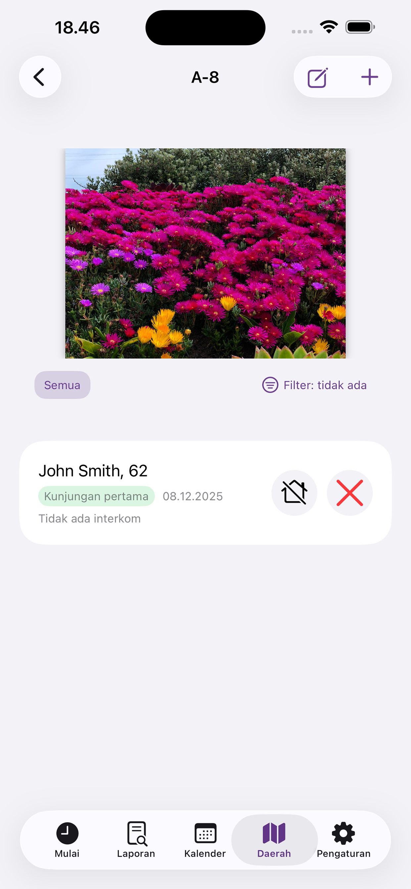
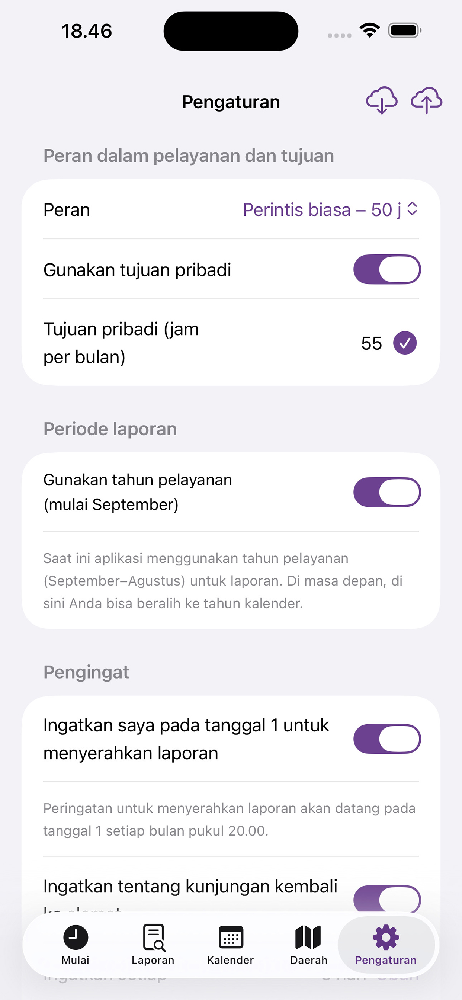
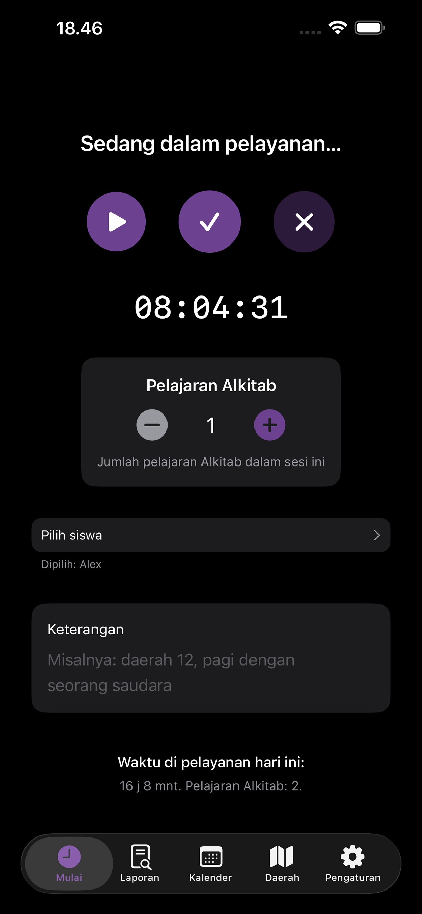
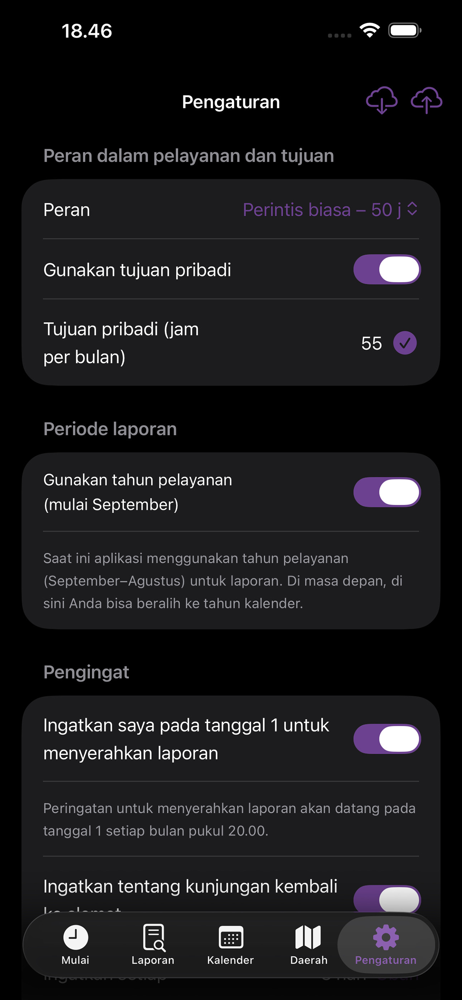

Pendamping Lengkap untuk Dinas Lapangan & Perintis
JW Ministry adalah aplikasi dinas lapangan Saksi-Saksi Yehuwa untuk iPhone dan iPad: pengatur waktu dengan Live Activities, catatan pelajar Alkitab, laporan tahun dinas, target jam perintis, dan kartu daerah dari rumah ke rumah.



Jelajahi Setiap Layar JW Ministry
Tangkapan layar asli dalam bahasa Indonesia — mulai dari timer dinas, daftar pelajar Alkitab, kalender perintis, kartu daerah, hingga mode gelap OLED.







Semua yang Anda Butuhkan untuk Dinas yang Terorganisasi
Dirancang khusus untuk penyiar, perintis ekstra, perintis biasa, dan perintis istimewa.
Timer Cerdas, Widget & Dynamic Island
Mulai timer dari aplikasi, widget layar utama, atau layar kunci. Timer aktif tetap terlihat di Dynamic Island.
Pelajaran Alkitab & Progres Publikasi
Hubungkan pelajaran Alkitab langsung ke catatan laporan. Pantau pelajaran setiap siswa di buku ”Hidup Bahagia Selamanya!”.
Peran Dinas & Target Jam Pribadi
Mendukung Penyiar, Perintis Ekstra (15 atau 30 jam), Perintis Biasa (50 jam), Perintis Istimewa (90 / 100 jam), dan target bulanan khusus.
Tahun Dinas (Sept–Agu) & Kalender
Rencanakan jadwal dinas dan ibadat keluarga. Bandingkan jam yang direncanakan vs aktual, dan geser rencana menjadi catatan laporan.
Daerah, Gedung Apartemen & Pengingat Kunjungan Kembali
Buat kartu daerah dengan foto peta, 10 warna, dan generator unit apartemen per lantai. Cari berdasarkan alamat atau nama.
Privasi 100% di Perangkat & Cadangan iCloud
Tanpa registrasi dan tanpa server eksternal. Semua catatan dan foto daerah tersimpan lokal di iPhone/iPad Anda.
Apa yang Baru di Versi 1.8
- Total otomatis jam yang direncanakan setiap bulan di Kalender dengan bar progres ganda (Rencana vs Aktual).
- Konversi jadwal dinas di Kalender langsung menjadi entri Laporan hanya dengan sekali geser.
- Pencarian instan berdasarkan alamat atau nama penghuni di semua daerah serta 10 warna kartu daerah.
- Dukungan untuk tahun dinas mendatang (2026–2027) di tab Laporan.
- Optimalisasi penuh untuk iOS & iPadOS terbaru serta perlindungan cadangan yang ditingkatkan.
Mengapa Penyiar & Perintis Memilih JW Ministry
Perbandingan lengkap untuk laporan dinas lapangan, jadwal perintis, dan pengelolaan daerah.
| Fitur | Catatan Kertas | Aplikasi Lama | JW Ministry 1.8 |
|---|---|---|---|
| Timer langsung di Layar Kunci & Dynamic Island | Tidak | Tidak | Ya (Live Activities) |
| Kalkulator jam perintis (15, 30, 50 j) & tahun dinas (600 j) | Manual | Sebagian | Otomatis + Target pribadi |
| Perbandingan Rencana vs Aktual di Kalender & geser ke Laporan | Tidak | Tidak | Sekali geser |
| Generator gedung apartemen + Foto daerah & 10 warna | Kertas | Hanya teks | Kartu visual + Pencarian |
| Pengingat kunjungan kembali & laporan tanggal 1 setiap bulan | Tidak | Dasar | Notifikasi pintar iOS |
| Privasi lokal 100% & cadangan lengkap dengan foto ke iCloud Drive | Mudah hilang | Gagal saat ganti iPhone | 100% Offline & aman |
| Dukungan asli untuk iOS terbaru, iPad, mode OLED & 35+ bahasa | — | Tidak diperbarui | Desain asli SwiftUI |
Dibuat untuk Dinas Lapangan & Perintis Saksi-Saksi Yehuwa
Bagaimana JW Ministry membantu penyiar dan perintis sepanjang tahun dinas.
Perintis Biasa dan Istimewa (50, 90 & 100 jam / Tahun Dinas 600 jam)
Pantau target bulanan 50 jam dan target tahunan 600 jam (September–Agustus) secara otomatis. Atur target pribadi (mis. 55 jam) dan bandingkan jam rencana dengan jam aktual di Kalender.
- Saldo otomatis 50 jam/bulan dan 600 jam tahun dinas
- Target jam bulanan khusus (mis. 55 jam)
- Bar ganda: jam direncanakan vs jam dilaporkan
Perintis Ekstra (15 & 30 jam) dan Penyiar Sidang
Saat kampanye khusus atau musim Peringatan, beralih ke Perintis Ekstra (15 atau 30 jam) dalam satu ketukan. Pengingat tanggal 1 pukul 20.00 membantu Anda menyerahkan laporan tepat waktu.
- Beralih cepat ke target 15 atau 30 jam perintis ekstra
- Bagikan laporan bulanan dengan satu ketukan
- Pengingat otomatis tanggal 1 setiap bulan pukul 20.00
Daerah Dari Rumah ke Rumah, Apartemen & Kunjungan Kembali
Buat kartu daerah digital dengan foto peta, 10 warna, dan generator unit apartemen. Catat ”Tidak di rumah” dan cari cepat berdasarkan nama atau alamat.
- Generator unit apartemen berdasarkan pintu masuk dan lantai
- Foto peta daerah, 10 warna, dan pencarian cepat
- Notifikasi pengingat kunjungan kembali otomatis
Progres Pelajar Alkitab & Pengganti Modern ServicePlanner / MyTime
Catat pelajaran setiap siswa di buku ”Hidup Bahagia Selamanya!”. Dirancang khusus untuk iPhone dan iPad.
- Pelacakan pelajaran ”Hidup Bahagia Selamanya!”
- Widget, Dynamic Island, dan mode gelap OLED
- Pengganti modern untuk ServicePlanner dan MyTime
Ulasan Penyiar & Perintis
Apa kata saudara-saudari yang menggunakan JW Ministry setiap hari dalam dinas.
“Melihat total jam yang direncanakan di Kalender dibandingkan dengan jam aktual sangat membantu saya menjaga jadwal 50 jam setiap bulan.”
“Timer di layar kunci dan fitur menggeser rencana Kalender langsung ke Laporan sangat praktis. Cepat, bersih, dan bebas iklan.”
“Generator apartemen dan pencarian nama di kartu daerah telah menggantikan semua catatan kertas saya.”
Diterjemahkan Lengkap ke 35+ Bahasa
Antarmuka aplikasi, widget, dan notifikasi otomatis mengikuti bahasa iPhone atau iPad Anda:
Dukung Pengembangan JW Ministry
JW Ministry sepenuhnya gratis, tanpa iklan dan tanpa langganan. Jika aplikasi ini membantu dinas Anda, Anda dapat mendukung pembaruan iOS berikutnya dan lisensi tahunan Apple Developer:
Dukung via Kartu (Seluruh Dunia)
Dukungan cepat melalui Boosty atau Patreon:
Transfer Kripto Langsung (Biaya 0%)
Langsung ke dompet pengembang:
TQQxYhThQGngj887Lvq9TnKtyyYMcUDFNw
UQBNBroTUyMG0YqgiHGXwVKO_rKe5d2y7gXqvICREjBwuKYk
Pertanyaan Umum (FAQ)
Bagaimana JW Ministry melengkapi aplikasi JW Library?
Sementara JW Library digunakan untuk membaca Alkitab, publikasi, dan perhimpunan, JW Ministry dibuat khusus untuk mencatat dinas lapangan pribadi Anda: menghitung jam, mengatur jadwal perintis (15, 30, 50 j), mengelola kartu daerah, dan memantau pelajar Alkitab.
Di mana laporan dan catatan daerah saya disimpan?
100% disimpan secara lokal di memori iPhone atau iPad Anda. Tidak ada data yang dikirim ke server eksternal.
Bagaimana cara memindahkan data ke iPhone baru?
Di tab Pengaturan, ketuk ikon awan di kanan atas untuk mengekspor cadangan lengkap ke iCloud Drive, lalu pulihkan di perangkat baru Anda.
Apakah aplikasi berfungsi tanpa internet saat berdinas?
Ya, berfungsi 100% offline tanpa kuota data atau Wi-Fi.